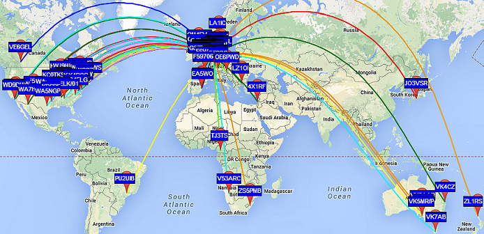
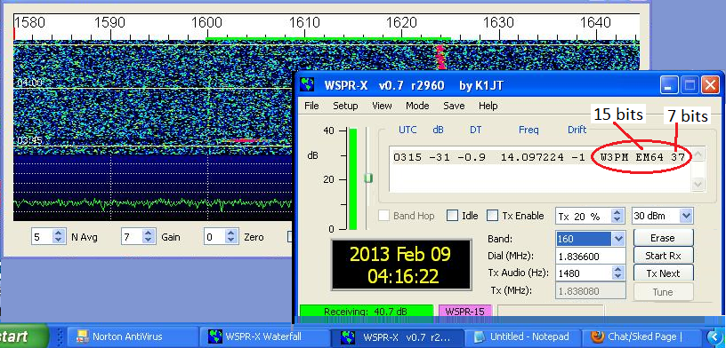
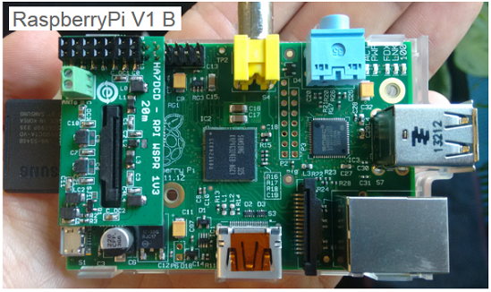
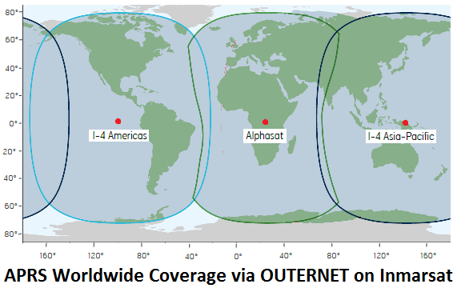
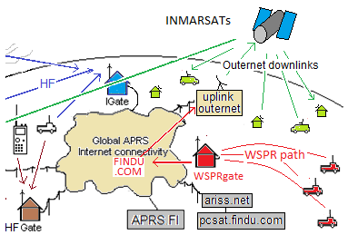

APRS-WSPR, A Reliable HF link
for wilderness and mobile APRS Operation
Bob Bruninga, WB4APR
lastname@usna.edu
APRS over WSPR is the ideal marriage of two very powerful Ham radio capabilities for communicating over great distances while mobile or portable in remote or wilderness areas. Both protocols are very low bandwidth with only minimal data payload requirements.
.
WSPR is a low power HF system: What WSPR brings to APRS is a 27 dB signal processing gain on the use of HF for mobile and portable APRS communication. This
enables a 1 Watt transmitter to perform as if it was 500 watts! Although the WSPR
links are extremly slow, about 22 bits in two minutes it is extremely
effective at HF communications. When combined with the APRS HFgate connectivity to the
APRS-IS, this brings a whole new level of remote area connectivity.
COMMUNICATING WITH ONLY 22 BITS!

As you can see on the WSPR user operating screen here at right, the only thing the WSPR channel is configured
to transmit is just the callsign, Gridsquare and Transmit power (circled in red) for
studying the HF propogation and alerting Ham operators to band openings. But if we operate
APRS-WSPR on a different HF frequency just for APRS, so as not to confuse the HF propogation application, we can define those 4 characters of the Grid Square differently and specifically for the APRS application.
APRS WSPRgates: And since the goal of APRS-WSPR is to get APRS reporting back into the APRS-IS, we can have many APRS WSPRgates listining all over the country on all HF bands to make sure that all data eventually reaches the APRS-IS any time of day or night in most cases.
The APRS-WSPR Challenge: It turns out, that we have alredy done that on our
next QIKCOM-2 satellite. We use the 4 character field
not only for position reporting (very useful for a remote Outernet APRS user) but also to
encode text messages. In addition, we can use
these 15 bits effectively for Disaster and Emergency Response communications. It turns
out that in 15 bits we can convey about 32,000 different codes. If each code, or subset
of codes conveyed valuable information, then our mission is complete.
For example, we have already encoded much of the following information in Four Bytes
on the QIKCOM-2 satellite and can do even more with the extra 7 power bits as a "type" identifier. For example:
POSITION to 12x18 miles using the four byte Gridsquare and some of the other 7 power bits.
MESSAGES, just two digits can convey any of the
43 ARRL Standard Radiograms
SPECIAL APRS Messages - an additional
50 APRS messages
have been included
MODIFIERS - and each message can have a 2 digit modifier for tailoring the message meaning.
EMERGENCY CODES use message #30 and the modifier to select any of the 14
Maritime Emergency Codes.
POSITION to 3x3 miles for stations with 5 byte calls and position to 0.7x0.5 miles for 4 byte calls.
 WSPR HF Transmitter: Because of the extremely high processing gain of the WSPR system, over 28 dB,
a simple 1W transmitter is equivalent to a regular 500 Watt SSB transmitter to provide the return data path. WSPR 'stations' transmit a
programmed message with their licensee's call sign and Four Digit OUTNET code in AFSK at extremely low speed.
It requires almost two minutes to complete one transmission. These transmissions are precisely timed to
begin at the start of the even minute, carefully calibrated to UTC or GMT by a GPS. Since a single WSPR signal is
only about 6 Hz wide, probably 15 can easilly fit in the 200Hz wide WSPR channel and by transmitting only once
every 20 minutes, then nearly 150 can share the channel. Further, 12 of these channels can fit in a single
2500 Hz HF voice channel for a total of 1800 users.
Shown here is the 1 Watt
Transmitter designed by W5OLF for the 30 meter Amateur Band.
Or the very tiny
0.1W WSPR transmitter designed by TAPR for the Rasberry Pi shown in the lower right. This would make an excellent
companion to the Rasberry Pi based Outernet System.
WSPR HF Transmitter: Because of the extremely high processing gain of the WSPR system, over 28 dB,
a simple 1W transmitter is equivalent to a regular 500 Watt SSB transmitter to provide the return data path. WSPR 'stations' transmit a
programmed message with their licensee's call sign and Four Digit OUTNET code in AFSK at extremely low speed.
It requires almost two minutes to complete one transmission. These transmissions are precisely timed to
begin at the start of the even minute, carefully calibrated to UTC or GMT by a GPS. Since a single WSPR signal is
only about 6 Hz wide, probably 15 can easilly fit in the 200Hz wide WSPR channel and by transmitting only once
every 20 minutes, then nearly 150 can share the channel. Further, 12 of these channels can fit in a single
2500 Hz HF voice channel for a total of 1800 users.
Shown here is the 1 Watt
Transmitter designed by W5OLF for the 30 meter Amateur Band.
Or the very tiny
0.1W WSPR transmitter designed by TAPR for the Rasberry Pi shown in the lower right. This would make an excellent
companion to the Rasberry Pi based Outernet System.
SOME HELPFUL WSPR LINKS: (stolen from K3RLL's web page)

WSPRNet Home Page
WSPRNet Real-time Signal Map
Stellar WSPR. Source for WSPR Receivers, kits or built.
W5OLF's new WSPR Transmitter Kit by AE5X
The Radio Whisperer' by George Steber.
Scroll down about half-way through this 'Nuts & Volts' introduction to WSPR
Joe Taylor's Weak Signal Communication Software page at Princeton. Scroll down to WSPR
Bob Bruninga, WB4APR
lastname at usna dot edu

The APRS Mobile Wilderness Return Path!: The above APRS-WSPR capability can then
be married with the global APRS-OUTNET system to make the remote wilderness operator a full two way link. A subsset of APRS is now carried on the OUTERNET system via three geostationary Inmarsat satellites with worldwide
coverage as shown here. Outernet is a low data rate worldwide satellite downlink to provide web content (downlink files only) to remote areas anywhere in the world.... This can provide the return path for APRS operators.

OUTNET is the APRS identifier for routing APRS traffic via the Outernet system with their typical low rate position and text data
when operating remotely in support of Disaster or Emergency Resonse communications.
Hams may use any existing Amatur Radio APRS channels for this return traffic such as HF
or the APRS amateur satellites for this path. Hence the exploration for using WSPR as an other such return path.
LICENSE REQUIRED: Of course, all of this is Amateur Radio and so only legal ham radio content can be acarried by the APRS system and all operators must have an Amateur Radio Operators license. If you are new to Amateur Radio, or want to get a license, see THE RULES (im still looking for a good link).
As you can see from the WSPR plot above,this kind of reliable links
fits in with the overall APRS OUTNET Concept of Operations (CONOPS) as shown in the zoomed
in portion shown at right. The WSPR links are shown on the right in red.
Return to the main APRS-OUT web page>